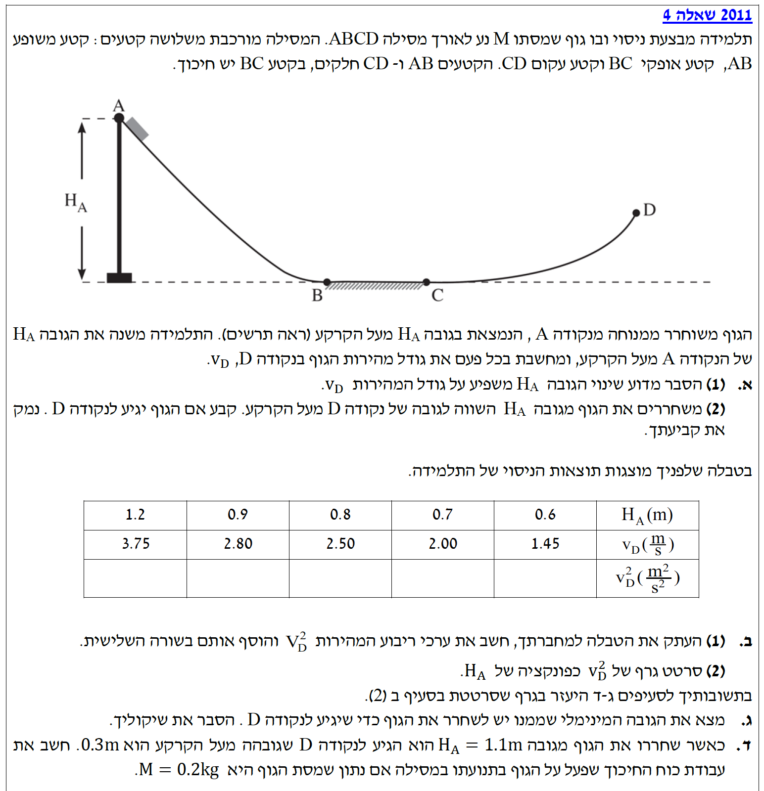

ברוכים הבאים לפתרון המודרך! בשאלה זו נעסוק בתנועת גוף על מסילה הכוללת קטעים חלקים וקטע בעל חיכוך. נשתמש בעקרונות של עבודה ואנרגיה כדי לנתח את התנועה, ונראה כיצד נתונים מניסוי יכולים לעזור לנו להבין את הפיזיקה שמאחורי התופעה. בהצלחה!
עודכן:--- --:--:--

[תמונת השאלה המקורית]לא נמצאה תמונה בשם question-image.png באותה תיקייה.
סעיף א' (1)
מה נתון: גוף משוחרר ממנוחה מנקודה A, בגובה \(H_A\) מעל הקרקע. המסילה מורכבת מקטעים AB ו-CD שהם חלקים (ללא חיכוך), וקטע אופקי BC שיש בו חיכוך.
מה מחפשים: הסבר מדוע שינוי הגובה \(H_A\) משפיע על גודל המהירות \(v_D\) בנקודה D.
נוסחאות ועקרונות בשימוש: אנו נשתמש במשפט עבודה ואנרגיה. הנוסחה מדף הנוסחאות קובעת כי עבודת שקול הכוחות הלא-משמרים שווה לשינוי באנרגיה המכנית הכוללת של המערכת. \( W_{nc} = \Delta E \)\( E_k = \frac{1}{2}mv^2 \)\( U_G = mgh \)
פתרון צעד-אחר-צעד:
האנרגיה המכנית ההתחלתית בנקודה A (שבה המהירות אפס) היא אנרגיה פוטנציאלית בלבד:
\[ E_A = m \cdot g \cdot H_A \]
האנרגיה המכנית הסופית בנקודה D מורכבת מאנרגיה פוטנציאלית וקינטית:
\[ E_D = m \cdot g \cdot H_D + \frac{1}{2} m v_D^2 \]
הכוח הלא-משמר היחיד שמבצע עבודה במערכת הוא כוח החיכוך הקינטי בקטע BC. נסמן את העבודה שלו ב- \( W_f \). מכיוון שאורך הקטע BC ומקדם החיכוך קבועים, עבודת החיכוך היא גודל קבוע ו-שלילי. נציב במשפט עבודה-אנרגיה ונבודד את \( v_D^2 \):
\[ E_D - E_A = W_f \]
\[ \left( m g H_D + \frac{1}{2} m v_D^2 \right) - m g H_A = W_f \]
\[ \frac{1}{2} m v_D^2 = m g H_A - m g H_D + W_f \]
\[ v_D^2 = 2g H_A - 2g H_D + \frac{2 W_f}{m} \]
\[ v_D^2 = 2g \cdot H_A + \left( \frac{2 W_f}{m} - 2g H_D \right) \]
מהמשוואה הסופית ניתן לראות בבירור תבנית של קו ישר, התואמת למשוואה המתמטית המוכרת \( y = mx + b \). נבצע הקבלה בין המשתנים בפיזיקה למתמטיקה:
\( y \) (הציר האנכי) הוא ריבוע המהירות \( v_D^2 \).
\( x \) (הציר האופקי) הוא גובה השחרור \( H_A \).
\( m \) (השיפוע) הוא הקבוע \( 2g \).
\( b \) (נקודת החיתוך עם הציר האנכי) הוא אוסף הקבועים שבתוך הסוגריים: \( \left( \frac{2 W_f}{m} - 2g H_D \right) \).
מסקנה: ככל שנגדיל את הגובה ההתחלתי \( H_A \), האנרגיה ההתחלתית של המערכת תהיה גדולה יותר. מכיוון שאובדן האנרגיה עקב החיכוך ( \( W_f \) ) נשאר קבוע, תישאר לגוף יותר אנרגיה בנקודה D, ולכן מהירותו \( v_D \) תהיה גדולה יותר.
💡 טיפ מורה:
תחשבו על אנרגיה כמו על כסף בבנק. \( H_A \) מגדיר כמה כסף יש לכם בתחילת המסע. החיכוך בקטע BC הוא "מס עבר חצייה" קבוע שאתם חייבים לשלם. המהירות \( v_D \) היא הכסף שנשאר לכם בסוף. אם תתחילו עם יותר כסף, ותשלמו את אותו המס הקבוע, בהכרח תסיימו עם יותר כסף!
סעיף א' (2)
מה נתון: הגוף משוחרר מגובה \(H_A\) השווה בדיוק לגובה של נקודה D מעל הקרקע. כלומר: \(H_A = H_D\).
מה מחפשים: לקבוע האם הגוף יצליח להגיע לנקודה D, ולנמק את הקביעה.
נוסחאות ועקרונות בשימוש: נשתמש שוב במשפט עבודה-אנרגיה ונבדוק את דרישות המינימום כדי להגיע לנקודה D. \( W_{nc} = \Delta E \)
פתרון צעד-אחר-צעד:
כדי שהגוף יגיע לנקודה D אפילו במהירות אפסית (\( v_D = 0 \)), האנרגיה המכנית המינימלית שעליו להיות בעל בנקודה זו שווה לאנרגיה הפוטנציאלית בגובה D:
\[ E_{D,\text{min}} = m g H_D \]
במקרה שלנו, נתון כי \( H_A = H_D \), ולכן האנרגיה ההתחלתית של הגוף היא:
\[ E_A = m g H_A = m g H_D \]
בדרך אל הנקודה D, הגוף עובר בקטע BC ופועל עליו כוח חיכוך נגד כיוון התנועה, שמבצע עבודה שלילית (\( W_f < 0 \)). נציב זאת במשוואה:
\[ E_{\mathrm{arr}} = E_A + W_f = m g H_D + W_f \]
מכיוון שהעבודה \( W_f \) היא שלילית, מתקיים ש- \( E_{\mathrm{arr}} < m g H_D \). כלומר, האנרגיה שתישאר לגוף תהיה קטנה מהאנרגיה הדרושה רק כדי להתקיים בגובה של נקודה D.
מסקנה: הגוף לא יגיע לנקודה D. עקב עבודת החיכוך השלילית בקטע BC, המערכת מאבדת אנרגיה מכנית. מכיוון שהגוף התחיל עם כמות אנרגיה המדויקת המספיקה רק להגעה לגובה \( H_D \) (ללא חיכוך), כל אובדן אנרגיה בדרך יגרום לכך שהוא יעצר לפני שיגיע לגובה זה.
💡 טיפ מורה:
זה כמו מגלשת הרים. אם אתם מתחילים מגובה של 10 מטרים, ויש חיכוך במסילה, לעולם לא תוכלו להגיע בחזרה לגובה של 10 מטרים בעלייה הבאה בלי שמנוע יעזור לכם. החיכוך גורם להמרה של אנרגיה מכנית לאנרגיית חום.
סעיף ב' (1)
מה נתון: טבלת תוצאות הניסוי של התלמידה, המכילה ערכים של גובה התחלתי \(H_A\) במטרים, ומהירות בנקודה D \(v_D\) במטרים לשנייה. כל היחידות נתונות במערכת MKS (ק"ג, מטר, שניות) ולכן אין צורך בהמרה.
מה מחפשים: להעתיק את הטבלה, לחשב את ערכי ריבוע המהירויות \(v_D^2\), ולהוסיף אותם כשורה שלישית.
נוסחאות ועקרונות בשימוש: אין כאן צורך בנוסחה חדשה מדף הנוסחאות. זהו חישוב מתמטי ישיר של ריבוע המהירות, תוך הקפדה על יחידות עקביות לאורך כל הטבלה.
חישוב צעד-אחר-צעד:
נבצע את החישוב עבור כל עמודה:
עבור \(1.45\) נקבל: \(1.45^2 = 2.1025 \approx 2.10\)
עבור \(2.00\) נקבל: \(2.00^2 = 4.00\)
עבור \(2.50\) נקבל: \(2.50^2 = 6.25\)
עבור \(2.80\) נקבל: \(2.80^2 = 7.84\)
עבור \(3.75\) נקבל: \(3.75^2 = 14.0625 \approx 14.06\)
1.2
0.9
0.8
0.7
0.6
HA (m)
3.75
2.80
2.50
2.00
1.45
vD (\(\frac{m}{s}\))
14.06
7.84
6.25
4.00
2.10
vD2 (\(\frac{m^2}{s^2}\))
מסקנה: הטבלה הושלמה כנדרש עם ערכי ריבוע המהירות.
💡 טיפ מורה:
בפיזיקה, הפעולות המתמטיות חלות גם על המספרים וגם על היחידות! אם מעלים מהירות שביחידות מטר/שנייה בריבוע, יחידות התוצאה יהיו בהכרח מטר רבוע חלקי שנייה רבועה. זהו סימן זיהוי מצוין לבדוק שלא טעיתם בדרך.
סעיף ב' (2)
מה נתון: הטבלה מסעיף ב'(1) הכוללת את ערכי \(H_A\) כמשתנה הבלתי-תלוי (ציר X), וערכי \(v_D^2\) כמשתנה התלוי (ציר Y).
מה מחפשים: לסרטט גרף המציג את \(v_D^2\) כפונקציה של \(H_A\).
נוסחאות ועקרונות בשימוש: עיקרון כללי בעיבוד נתונים ניסיוניים: כאשר בודקים קשר ליניארי בין שני גדלים, מציגים את הנתונים בגרף ומעבירים קו מגמה ישר העובר קרוב ככל האפשר לנקודות המדידה.
הסרטוט הגרפי:
לפניכם הגרף שצויר על סמך נתוני הטבלה. הנקודות מייצגות את מדידות התלמידה, והקו הכחול מייצג את קו המגמה (הקו שמייצג את החוקיות הפיזיקלית בצורה הטובה ביותר).
הגרף הושלם בהצלחה עם נקודות המדידה וקו מגמה ליניארי.
💡 טיפ מורה:
כשמשרטטים גרף מנתוני ניסוי (גרף אמפירי), אף פעם לא מחברים את הנקודות כמו בחוברת ציור לילדים! אנחנו יודעים מהפיזיקה (מסעיף א') שהקשר צריך להיות ישר. לכן, מותחים קו מגמה ישר שעובר "באמצע" הנקודות. הנקודות לא ישבו בדיוק על הקו בגלל שגיאות מדידה טבעיות בניסוי, וזה בסדר גמור!
סעיף ג'
מה נתון: הגרף ששורטט בסעיף הקודם, המציג את הקשר הליניארי בין ריבוע המהירות בנקודה D לבין גובה השחרור בנקודה A.
מה מחפשים: את הגובה המינימלי שממנו יש לשחרר את הגוף כדי שיגיע (בדיוק) לנקודה D, בתוספת הסבר.
נוסחאות ועקרונות בשימוש: עיקרון כללי: כדי שגוף יגיע בדיוק לנקודה מסוימת, מהירותו באותה נקודה מתאפסת. בגרף, נקודת החיתוך עם ציר ה-X מייצגת מצב שבו המשתנה שעל הציר האנכי שווה לאפס.
חישוב צעד-אחר-צעד:
ניגש לגרף שסרטטנו. נחפש את הערך בציר ה-X (\(H_A\)) עבורו ערך ה-Y (\(v_D^2\)) הוא 0.
כדי להיות מדויקים, נמצא את משוואת הישר של קו המגמה. נבחר שתי נקודות מהטבלה שנמצאות היטב על המגמה, למשל הנקודה (0.7, 4.00) והנקודה (1.2, 14.06). נחשב את השיפוע:
(הערה: השיפוע התיאורטי מהמשוואה שלנו בסעיף א' הוא \(2g = 20\), מה שמאשר שהניסוי מדויק מאוד!).
נמצא את משוואת הישר, מתוך הנחה של שיפוע 20 ועובר דרך (0.7, 4.00):
(כפי שאפשר לראות, גם בחיתוך הישיר בגרף קיבלנו ערך זהה, שסומן בעיגול אדום בגרף).
מסקנה: הגובה המינימלי הדרוש להגעה לנקודה D הוא \( 0.5 \text{ m} \).
הסבר: במצב מינימלי זה, כל האנרגיה שהגוף צובר בירידה מתבזבזת על עבודת החיכוך ועל טיפוס חזרה לגובה D, כך שלא נותרת לו אנרגיה קינטית בנקודה D והמהירות שם מתאפסת בדיוק.
💡 טיפ מורה:
קריאה נכונה של נקודות חיתוך בגרף היא כלי עצמתי בפיזיקה. שימו לב שאם משרטטים את הגרף בצורה מדויקת ולפי הכללים, אפשר להסיק את המספר הנדרש ישירות מתוך הגרף עצמו (קריאת הערך בנקודת החיתוך עם הציר האופקי - המייצגת את המצב שבו גודל המהירות בנקודה D שווה לאפס).
סעיף ד'
מה נתון: אנו מקבלים כעת נתונים מספריים חדשים עבור מערכת הניסוי:
גובה שחרור התחלתי: \( H_A = 1.1 \text{ m} \).
גובה נקודה D מן הקרקע: \( H_D = 0.3 \text{ m} \).
מסת הגוף: \( M = 0.2 \text{ kg} \).
תאוצת הכובד: קבוע \( g = 10 \frac{m}{s^2} \).
(היחידות כבר במערכת MKS ולכן אין צורך בהמרה).
מה מחפשים: לחשב את עבודת כוח החיכוך שפעל על הגוף בקטע BC. נסמן אותה כ- \( W_f \).
על פי משפט עבודה-אנרגיה, ההפרש בין האנרגיה בסוף לאנרגיה בהתחלה שווה לעבודת הכוח הלא-משמר היחיד הפועל במערכת (כוח החיכוך מקטין את גודל המהירות בקטע BC):
מסקנה: עבודת כוח החיכוך שפעל על הגוף בתנועתו במסילה היא \( -0.4 \text{ J} \) (ג'אול).
💡 טיפ מורה:
שימו לב לסימן המינוס! קיבלנו שעבודת החיכוך היא שלילית. זוהי בדיקת שפיות (Sanity Check) מעולה בבחינה: כוח חיכוך קינטי פועל תמיד בניגוד לכיוון ההעתק של הגוף, הזווית ביניהם היא \(180^\circ\) (\(\cos180^\circ = -1\)), ולכן עבודת החיכוך חייבת להיות תמיד שלילית, כי היא 'שואבת' אנרגיה מכנית מהמערכת וממירה אותה לחום.
נוסח השאלה המקורית
[תמונת השאלה המקורית]לא נמצאה תמונה בשם question-image.png.